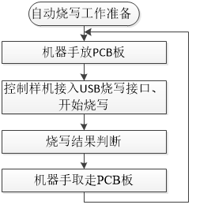

2.3. 机台自动烧录操作流程
2.3.1. 自动烧录介绍
目的
人工烧录速度慢，机台自动烧录可以大大提高烧录速度，解决人工烧录效率低问题。
实现说明
机台主要是通过烧录器上的IO信号控制自动烧录，取代手动烧录中“开始烧录”和“烧录结果判断”两个步骤中的相关工作。通过机器手放板到治具并执行开始烧录，机台实时监控IO信号对应的烧录状态，对烧录结果进行判断处理。
V2.0版本烧录器预留有自动烧录IO信号接线接口，V1.2版本烧录器需要修改部分硬件留出IO信号接口及需要烧录器固件支持才能实现自动烧录功能。
2.3.2. 自动烧录IO控制信号说明
2.3.3. 样机芯片自动烧录
2.3.3.1. 自动烧录准备工作
自动烧录样机芯片程序前，确保执行了《手动烧录、校验、查空芯片操作流程》相关小节的相关操作，以防烧录过程出现一些异常问题，包括：
烧录前上电开机，进入准备烧录显示界面（请参考《烧录器上电开机》小节）
确认或更新当前烧录器固件版本为需要的版本（请参考《烧录器固件版本确认及更新》小节，可不定时确认）
确认或更新当前烧录器内的目标芯片程序为要烧录的程序（请参考《更新目标芯片程序到烧录器》小节）
确认或设置当前烧录器工作模式为烧录模式（请参考《烧录器工作模式介绍与设置》小节）
自动烧录机台烧录环境搭建。
2.3.3.2. 自动烧录流程说明
自动烧录准备工作做好后，可对烧录器重新上电开机并打开控制USB电源的钮子开关，让烧录器显示界面处于准备烧录状态。当烧录器检测到样机芯片的VBAT、DM、DP、GND引脚连接的USB公头接入USB烧录接口，即开始对当前通道的样机芯片进行程序烧录。机台自动烧录流程大致如自动烧录流程所示：

自动烧录流程